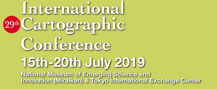
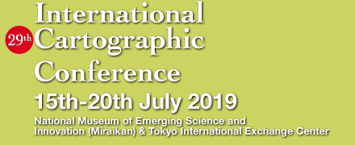

TRAVEL GRANT
ICC2019 LOC Travel Grant
The Local Organizing Committee of the 29the International Cartographic Conference (ICC2019) announces the availability of travel grants to subsidize the costs of participation in the conference taking place July 15–20, 2019 in Tokyo, Japan. A maximum of 50 applicants for this grant will receive up to JPY 100,000 each competitively.
Applicants must be younger than 35 years, and submit abstract or full paper to the Organizing Committee in due course through the online system at https://reg-cloud.com/icc2019/Entry/Login.aspx.
Furthermore, a valid online registration is mandatory.
Applicants must submit the following items:
- 1) Application form (name, address, e-mail, submission ID, and title of the presentation etc.)
- 2) A short statement within 250 words explaining why LOC should approve the applicant including the plan in Tokyo
- 3) Proof of the applicant’s most recent year’s education or degree
Among three items above, 2) and 3) should be made preferably in PDF format. These documents should be compiled into a zipped folder, preferably with password protection, and be sent to the Secretariat of ICC2019 by e-mail (icc2019@issjp.com) with subject heading “ICC2019 Travel Grant”, no later than March 1, 2019 March 8, 2019. Late applications cannot be considered. Please include in the subject header “ICC2019 travel grant application”.
In selecting applicants to receive awards will be based on the short statement and the score earned by the submitted abstract or full paper. Preference will be given to PhD students from developing countries. Duplication is allowed to applying to the ICA scholarship.
Applicants will be notified of the outcome of their applications on or about March 20, 2019. Travel grant will be paid in Japanese yen after presentation at the conference. If you have any questions regarding this grant application, please direct them to the secretariat (e-mail: icc2019@issjp.com).